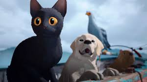

Analisis
El video trata sobre la película animada Flow, una historia que se desarrolla en un mundo donde los humanos han desaparecido y solo quedan animales. La trama sigue a un grupo de ellos que, tras una gran inundación, deben sobrevivir juntos en una balsa. La película no solo muestra la lucha por la supervivencia, sino que también transmite una fábula sobre la amistad, la cooperación y el significado de la vida, todo esto sin necesidad de diálogos.
Nos enseña que la convivencia con otros puede ser difícil, pero también una oportunidad para crecer y aprender. La película muestra cómo los personajes, al principio egoístas, empiezan a valorar las cualidades de los demás, reflejando lo que pasa en la vida real con las relaciones humanas. También deja una lección importante sobre soltar a quienes no aportan a nuestro crecimiento, entendiendo que no todas las personas que conocemos están destinadas a quedarse en nuestra vida.
En mi opinión, Flow parece ser una película profunda y con un mensaje importante sobre la vida y las relaciones. Me gusta cómo usa a los animales para representar diferentes personalidades y emociones humanas. Aunque no sea una historia alegre, creo que su valor está en cómo nos hace reflexionar sobre la resiliencia, la amistad y la importancia de seguir adelante a pesar de las dificultades.
Imágenes
Tráiler
Aquí puedes ver el tráiler de la película: